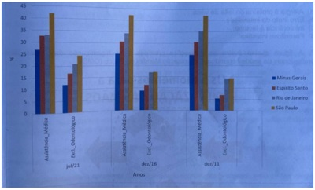

Questão 1 · Financiamento do SUS · 4000186735"O programa Previne Brasil foi instituído pela Portaria nº 2.979, de 12 de novembro de 2019. O novo modelo de nanciamento altera algumas formas de repasse das transferências para os municípios, que passam a ser distribuídas com base em quatro critérios: capitação ponderada, pagamento por desempenho, incentivo para ações estratégicas e Incentivo nanceiro com base em critério populacional. A proposta tem como princípio a estruturação de um modelo de nanciamento focado em aumentar o acesso das pessoas aos serviços da Atenção Primária e o vínculo entre população e equipe, com base em mecanismos que induzem à responsabilização dos gestores e dos pro ssionais pelas pessoas que assistem." (Ministério da Saúde, 2009.) Assinale a alternativa correta:
A O componente Incentivo financeiro com base em critério populacional faz parte da apuração do valor de referência para o financiamento da atenção secundária, quaternária a saúde e preterição da estratégia saúde da família.
B O valor do incentivo per capita é definido pelo Ministério da Fazenda a cada quinze dias e publicado em portaria restrita para os secretários de saúde de cada município.
C O Programa Previne Brasil está sintetizado em medidas de prevenção de doenças infectocontagiosas, estimulando o uso de preservativo masculino e feminino como principal medida de melhora na sobrevida populacional uma vez que o aumento de doenças como HIV, Sífilis e Hepatites virais ocasionaram grande impacto financeiro na saúde pública nesta década.
D O aporte estabelecido por município e Distrito Federal leva em conta estimativa populacional mais recente divulgada pelo IBGE.
E O financiamento do SUS é oriundo de recursos financeiros do Orçamento da Seguridade Social, recursos da União e dos estados, deixando aos municípios a isenção do financiamento, porém com a obrigatoriedade de gerir estes fundos dentro dos seus limites territoriais.
Questão 2 · Financiamento do SUS · 4000186734"O programa Previne Brasil foi instituído pela Portaria nº 2.979, de 12 de novembro de 2019. O novo modelo de nanciamento altera algumas formas de repasse das transferências para os municípios, que passam a ser distribuídas com base em quatro critérios: capitação ponderada, pagamento por desempenho, incentivo para ações estratégicas e Incentivo nanceiro com base em critério populacional. A proposta tem como princípio a estruturação de um modelo de nanciamento focado em aumentar o acesso das pessoas aos serviços da Atenção Primária e o vínculo entre população e equipe, com base em mecanismos que induzem à responsabilização dos gestores e dos pro ssionais pelas pessoas que assistem." (Ministério da Saúde, 2009.) Assinale a alternativa correta:
A Os incentivos financeiros para ações estratégicas abrangem características específicas de acordo com a necessidade de cada município ou território. Esses incentivos contemplam a implementação de programas, estratégias e ações que refletem na melhoria do cuidado na Atenção Primária a Saúde. São exemplos o Programa Saúde na Hora, equipe de Saúde da Família Ribeirinha e equipe de Consultório na Rua.
B A capitação ponderada é uma forma de repasse financeiro da Atenção Primária às prefeituras e ao Distrito Federal, cujo modelo de remuneração é calculado com base no número de pessoas cadastradas. O cadastro deve ser feito pelas equipes de Saúde da Família, equipes de Atenção Primária, equipes de Saúde da Família Ribeirinha, equipes de Consultório na Rua ou equipes de Atenção Primária Prisional.
C O pagamento por desempenho é um dos componentes que fazem parte da transferência mensal aos municípios. Nesse componente, a definição do valor a ser transferido depende dos resultados alcançados no conjunto de indicadores monitorados e avaliados no trabalho das equipes de Saúde da Família e de Atenção Primária.
D A proporção de gestantes com realização de exames para sífilis e HIV, proporção de mulheres com coleta de citopatológico na APS e proporção de crianças de um ano de idade vacinadas na Atenção Primária a Saúde contra Difteria, Tétano, Coqueluche, Hepatite B, infecções causadas por haemophilus influenzae tipo b e Poliomielite inativada são indicadores do Previne Brasil. Sendo estes indicadores estrem atrelados ao Pagamento por Desempenho.
E Todas as alternativas estão corretas.
Questão 3 · Saúde Suplementar · 4000186729"Em 2000, foi criada, pela Lei nº 9.961/2000, a Agência Nacional de Saúde (ANS) - autarquia responsável pela regulação, normatização, controle e scalização das atividades de assistência suplementar à saúde. Diferente da experiência de outros países, nos quais a saúde suplementar é feita a partir da própria atividade econômica, o governo brasileiro optou por regular o que é oferecido pelos planos de saúde, tendo como principais objetivos corrigir as distorções quanto às seleções de risco e preservar a competitividade do mercado". Saúde suplementar no Brasil: o papel da Agência Nacional de Saúde Suplementar na regulação do setor. Physis. 2008. Com relação à medicina privada, as operadoras de plano de saúde podem ser classificadas conforme o seu funcionamento. Associe as colunas e assinale a alternativa correta. A- Seguradoras especializadas em saúde. B- Autogestões. C- Cooperativas médicas. D- Administradoras de benefícios. I. Pessoa jurídica de direito privado, sem ns lucrativos, que opera plano de saúde, criada por empresas, associações de pessoas físicas ou jurídicas, fundações, sindicatos, entidades de categorias pro ssionais, ou assemelhados, com o objetivo de prestar assistência à saúde exclusivamente a seus empregados, ex-empregados, administradores, ex- administradores, associados e dependentes do grupo familiar. II. São operadoras que não possuem rede própria, mas referenciam uma rede de serviços, ou seja, pagam diretamente aos prestadores de serviços integrantes da rede, em nome dos clientes que utilizam os serviços. Também são obrigadas a prever a livre escolha, em que os segurados podem escolher estabelecimentos ou pro ssionais de saúde não referenciados pela seguradora, reembolsando o beneficiário dentro de limites contratualizados. III. Pessoa jurídica que propõe a contratação de plano coletivo na condição de estipulante ou que presta serviços para pessoas jurídicas contratantes de planos privados coletivos de assistência à saúde. Quando relacionada a entidades profissionais, contribui para identificar produtos mais adequados a esta coletividade e a reduzir os custos. IV. De acordo com a Lei n o 5.764/71 (Lei das Cooperativas), a cooperativa é uma sociedade de pessoas que reciprocamente se obrigam a contribuir com bens ou serviços para o exercício de uma atividade econômica. As cooperativas médicas são operadoras que podem comercializar planos para pessoas físicas ou jurídicas, constituir uma rede de serviços própria ou contratar terceiros.
A A - II, B - I, C - IV, D - III.
B A - II, B - I, C - III, D - IV.
C A - II, B - IV, C - III, D - I.
D A - IV, B - III, C - II, D - I.
E A - IV, C - II, B - I, D - III.
Questão 4 · Saúde Suplementar · Atenção Primária à Saúde APS no Brasil · 4000186728Agência Nacional de Saúde ANS Lei n 99612000 "Em 2000, foi criada, pela Lei nº 9.961/2000, a Agência Nacional de Saúde (ANS) - autarquia responsável pela regulação, normatização, controle e scalização das atividades de assistência suplementar à saúde. Diferente da experiência de outros países, nos quais a saúde suplementar é feita a partir da própria atividade econômica, o governo brasileiro optou por regular o que é oferecido pelos planos de saúde, tendo como principais objetivos corrigir as distorções quanto às seleções de risco e preservar a competitividade do mercado". Saúde suplementar no Brasil: o papel da Agência Nacional de Saúde Suplementar na regulação do setor. Physis. 2008. Assinale a alternativa correta:
A O atual modelo do sistema de saúde suplementar brasileiro tem como base a lógica biomédica com foco na doença, a excessiva medicalização e o privilégio do uso de tecnologias nas práticas de cuidado.
B Ao contrário do observado no SUS (Sistema Único de Saúde), não há no sistema privado a cultura de um arranjo que favoreça a constituição de linhas de cuidado que incorporem estratégias de promoção conjuntamente à assistência, como ocorre em modelos que têm a coordenação do cuidado na APS (Atenção Primária a Saúde).
C A ANS tem estimulado as operadoras de planos de saúde a repensarem a organização do sistema de saúde suplementar e a formularem medidas para a adoção de modelos assistenciais estruturados no cuidado integral, com ênfase na promoção e na prevenção da saúde dos beneficiários.
D O modelo de remuneração médica que predomina na maior parte dos serviços é o fee-for service (pagamento por serviços), que estimula a sobreutilização, não favorece ""ações robustas para mudança comportamental e de reconhecimento e abordagens precoces de fatores de risco para adoecimento"", associa-se com uma distribuição desigual dos médicos em relação às suas especialidades com concentração em áreas de maior rentabilidade, diminui o limiar para a prescrição de intervenções invasivas e exames complementares, muitas vezes desnecessários, aumenta o número de consultas e procedimentos.
E Todas as alternativas estão corretas.
Questão 5 · Financiamento na Lei n 81421990 · 4000186515De acordo com a Lei n° 8.142, de 28 de dezembro de 1990, que dispõe sobre a participação da comunidade na gestão do Sistema Único de Saúde (SUS) e sobre as transferências intergovernamentais de recursos nanceiros na área da saúde, para receberem os recursos de que trata o art. 3° desta lei, os Municípios, os Estados e o Distrito Federal deverão contar com:
A Serviço de auditoria interna.
B Estratégia de Saúde da Família.
C Seguridade Social.
D Serviço de Vigilância em Saúde.
E Plano de Saúde.
Questão 6 · Financiamento na Lei n 80801990 · 4000186510A Lei nº 8080, de 19 de setembro de 1990, quando trata da gestão financeira do SUS, define que para o estabelecimento de valores a serem transferidos a Estados, Distrito Federal e Municípios, segundo análise técnica de programas e projetos, será utilizada a combinação de critérios, entre eles a(o):
A Existência de Equidade no Sistema e a alinhamento conceitual dentro da rede de atenção.
B Previsão do plano quinquenal de investimentos da rede e o perfil demográfico da região.
C Rede parametrizada capaz de fiscalizar alinhado com o investimento hospitalar público e privado.
D Rede bancária local e pública e um programa de administração de recursos próprios que interagem.
E Desempenho técnico, econômico e financeiro previsto para o período anual posterior e Fundo de Saúde.
Questão 7 · Financiamento na Lei n 80801990 · 4000186107No artigo "Atraso crônico" publicado na Folha de São Paulo (30/4), Cláudio Lottenberg defendeu um "novo sistema de saúde para o Brasil", no qual o Estado teria "a responsabilidade de criar os elementos facilitadores para atrair ainda mais a iniciativa privada". Conforme o artigo 24 da Lei n° 8.080/1990, o Sistema Único de Saúde (SUS) poderá recorrer ao setor privado de saúde quando for demonstrada hipossu ciência de serviços para garantir a assistência integral à população de uma determinada área. Neste contexto, qual é o mecanismo legal para a operacionalização esta contratação?
A Formalizar por contrato ou convênio, respeitadas as normas do direito público.
B Será regulada por acréscimo financeiro complementar na Tabela SIGTAP/SUS conforme percentuais de capacidade instalada oferecida pela instituição filantrópica ou privada.
C Ocorrerá por contrato ou convênio com os chefes de serviços privados que já trabalhem no SUS, garantindo a qualidade assistencial.
D Poderá desconsiderar os mecanismos de regulação assistencial por se tratar de oferta adicional.
Questão 8 · Saúde Suplementar · 4000185977No âmbito da Saúde Suplementar, a pessoa jurídica de direito privado de ns não econômicos, constituída sob forma de associação ou fundação, que opera plano privado de assistência à saúde aos integrantes de determinada categoria profissional que sejam seus associados, é caracterizada como:
A Plano coletivo por adesão.
B Cooperativa de saúde.
C Plano coletivo empresarial.
D Auto-gestão.
E Seguro saúde.
Questão 9 · Financiamento do SUS · 4000185742Em 2019 foi instituído o Programa Previne Brasil, que estabelece novo modelo de nanciamento de custeio da Atenção Primária à Saúde no âmbito do Sistema Único de Saúde. Dentre os dispositivos elencados nas alternativas abaixo, qual foi inserido pelo Programa Previne Brasil?
A Piso da Atenção Básica Fixo.
B Pagamento por equipe NASF (Núcleo de Apoio à Saúde da Família).
C Componente Qualidade e Desempenho do Piso de Atenção Básica Variável.
D Capitação ponderada.
Questão 10 · Financiamento na Lei n 80801990 · 4000185740De acordo com a Lei 8080/90, que regula as ações e serviços de saúde no Brasil, à direção estadual do Sistema Único de Saúde (SUS) não compete:
A Prestar apoio técnico e financeiro aos municípios.
B Executar a totalidade das ações de saúde das redes hierarquizadas do SUS.
C Coordenar e, em caráter complementar, executar ações e serviços de saúde do trabalhador.
D Gerir sistemas públicos de saúde de alta complexidade.
Questão 11 · Financiamento do SUS · 4000184769Pode-se afirmar que o padrão de financiamento do sistema de saúde público brasileiro se caracteriza pela:
A definição de percentuais mínimos de gastos dos tributos estaduais e municipais com saúde.
B vinculação de tributos federais como fontes de financiamento para a saúde.
C destinação de recursos públicos exclusivamente para o SUS.
D permissão, no país, de que o gasto público seja maior que o gasto privado com saúde.
Questão 12 · Planos e Seguros de Saúde Lei n 96561998 · Outros · 4000184765Pode-se afirmar, em relação aos Planos de Saúde Individuais e aos Seguros de Saúde no Brasil, que:
A dado o princípio que garante a possibilidade de os serviços de saúde serem facultados à livre iniciativa, pode- se afirmar que a universalidade e integralidade só será atingida a partir da saúde suplementar.
B as operadoras de Planos de Saúde obrigam-se ao ressarcimento integral dos gastos efetuados a partir da livre escolha dos participantes de seus planos.
C os valores a serem reembolsados pelas Seguradoras de Saúde devem ser universalmente integrais, independente da escolha do usuário, dada a garantia da Integralidade do Sistema de Saúde.
D as operadoras de Planos de Saúde garantem a prestação de serviços de saúde em sua rede própria ou credenciada de saúde, devendo em caso de alterações demonstrar que mantém o cardápio e qualidade de serviços.
Questão 13 · Financiamento do SUS · Conceitos gerais de custeios em saúde · 4000181213Para que o Sistema Único de Saúde cumpra com seus princípios doutrinários e organizativos, seu nanciamento torna-se fundamental. Considerando a lei que regulamenta o nanciamento do SUS, assinale a alternativa que apresenta, corretamente, uma despesa que pode ser custeada com recursos da saúde.
A Ações de assistência social.
B Capacitação do pessoal de saúde do SUS.
C Limpeza urbana e remoção de resíduos.
D Merenda escolar e outros programas de alimentação.
E Pagamento de aposentadorias e pensões.
Questão 14 · Planejamento em Saúde · 4000181211Considerando a complexidade do SUS, é fundamental que a gestão desse sistema seja organizado e pautado em instrumentos que ofereçam subsídios para a atuação dos gestores de saúde. Em relação aos instrumentos de planejamento do SUS, considere os itens a seguir. I. Relatório de gestão. II. Programação anual de saúde. III. Lei Orçamentária Anual. IV. Lei de Diretrizes Orçamentária. Assinale a alternativa correta.
A Somente os itens I e II são corretos.
B Somente os itens I e IV são corretos.
C Somente os itens III e IV são corretos.
D Somente os itens I, II e III são corretos.
E Somente os itens II, III e IV são corretos.
Questão 15 · Financiamento na Lei complementar n 1412012 · 4000181208A partir da Constituição Federal de 1988, a saúde passou a ser um “direito de todos e dever do Estado”. Dessa forma é papel do Estado promover o nanciamento desse sistema. Em 2000, a Emenda Constitucional 29 previa o quanto cada ente federativo deveria investir em saúde. Mais tarde, em 2012, essa emenda foi regulamentada. Assinale a alternativa que apresenta, corretamente, a porcentagem, mínima, que o município deve investir em saúde.
A 3%
B 5%
C 7%
D 12%
E 15%
Questão 16 · Financiamento em Saúde · Saúde Suplementar · 4000190947No que se refere à participação das instituições privadas no Sistema Único de Saúde, a Constituição Federal estabelece que:
A É permitida a destinação de recursos públicos para auxílios ou subvenções a todas as instituições que participem do Sistema Único de Saúde.
B Elas podem participar de forma complementar, mediante contrato de direito público ou convênio.
C Elas podem participar de forma suplementar, não importando se de capital nacional ou estrangeiro.
D Não se deve fazer distinção entre as entidades filantrópicas, as sem fins lucrativos e as instituições privadas com fins lucrativos, desde que atuem segundo suas diretrizes.
E Não é permitida sua participação.
Questão 17 · Financiamento na Constituição Federal CF1988 · 4000175311De acordo com a Constituição Federal de 1988, assinale a alternativa correta:
A Faz parte dos objetivos da seguridade social, a desigualdade dos benefícios e serviços às populações urbanas e rurais, incluídas as comunidades indígenas.
B O Sistema Único de Saúde será financiado com recursos do orçamento da União, dos estados, do Distrito Federal e dos municípios.
C As instituições privadas poderão participar de forma complementar do Sistema Único de Saúde, segundo diretrizes próprias, tendo preferência as entidades filantrópicas e as sem fins lucrativos.
D É vedada a participação direta ou indireta de empresas ou capitais estrangeiros na assistência à saúde no país, salvo nos casos previstos em lei.
E as ações e serviços públicos de saúde integram uma rede regionalizada e hierarquizada e constituem um sistema único, organizado com vistas ao atendimento integral, excluídos os serviços assistenciais.
Questão 18 · Financiamento em Saúde · Medicina Preventiva · 4000173610O programa Previne Brasil, instituído pela Portaria nº 2.979, de 12 de novembro de 2019, constitui o novo modelo de financiamento dos serviços da Atenção Primária. Sobre as características do referido programa, analise as sentenças abaixo: I. O custeio é composto por três critérios: capitação ponderada, pagamento por desempenho e incentivo para ações estratégicas II. Ampliação do horário de atendimento (Programa Saúde na Hora) III. Investimento na tecnologia da informação (Informatiza APS) IV. Investimento no Núcleo Ampliado de Saúde da Família e Atenção Básica (NASF-AB) V. Incentivo às equipes de saúde bucal (eSB) Estão CORRETAS
A I, II, III, IV e V.
B apenas II e III.
C apenas II, III e IV.
D apenas II, III, IV e V.
E apenas I, II, III e V.
Questão 19 · Emenda constitucional n 952016 · 4000171108Em relação à Emenda Constitucional 95, assinale a opção correta.
A O financiamento da saúde deve ser feito com recursos dos três poderes (executivo, legislativo e judiciário).
B Estabelece, no caso dos municípios, o percentual mínimo de 12% de sua receita em ações e serviços de saúde.
C Congela os gastos em saúde em 15% da receita corrente líquida do governo federal de 2017, a ser atualizado anualmente pela variação do índice inflacionário IPCA/IBGE, até 2036.
D Leva em consideração o envelhecimento da população, com aumento progressivo do financiamento da saúde.
E Promove o financiamento da saúde com contribuição da Previdência social.
Questão 20 · Financiamento do SUS · 4000171101Em relação ao novo modelo de Financiamento da Atenção Básica, promulgado pela Portaria 2.979, de 12 de novembro de 2019, pode-se afirmar:
A Apresenta três componentes de custeio da Atenção Primária em Saúde (APS): piso per capita da população estimada para o território, pagamento por desempenho e incentivo para ações estratégicas.
B A Portaria No 29, de 16 de abril de 2020, determina que o Programa Previne Brasil será implementado no país após o término ou estabilização da pandemia pelo vírus covid-19.
C Com a efetivação do novo modelo, as medidas instituídas pela Emenda Constitucional No 95 serão revogadas, passando a não haver correção anual das despesas federais com o setor saúde.
D Os recursos passam a ser transferidos na modalidade fundo a fundo, de forma regular e automática, e repassados pelo Bloco de Custeio das Ações e Serviços Públicos de Saúde.
E Dados concernentes a sistemas de informação como SCNES e SISAB não influenciam a avaliação por desempenho das equipes, uma vez que esse processo se baseia apenas no e-SUS.
Questão 21 · Financiamento do SUS · 4000170537Ao longo da evolução do Sistema Único de Saúde, com o objetivo de facilitar a autonomia dos municípios em relação à gestão, diferentes regras de nanciamento foram aplicadas. Assinale, dentre as alternativas abaixo, a medida implementada pela Emenda Constitucional nº95, de 15 de dezembro de 2016:
A Os municípios e o Distrito Federal aplicarão anualmente, em ações e serviços públicos de saúde, no mínimo 15% da arrecadação dos impostos municipais.
B Os estados e o Distrito Federal aplicarão anualmente, em ações e serviços públicos de saúde, no mínimo 12% da arrecadação dos impostos estaduais
C No Distrito Federal, dos impostos que não entram na base municipal ou estadual será aplicado, no mínimo, 12% anualmente
D Os limites mínimos de transferência de recursos passam a ter correção anual com base no IPCA
Questão 22 · Saúde Suplementar · 4000169446A saúde suplementar no Brasil é a atividade que envolve a operação de planos e seguros privados de assistência médica à saúde, referidos simplesmente como planos ou seguros de saúde. Essa operação é regulada pelo poder público, representado pela Agência Nacional de Saúde Suplementar (ANS), e pelas operadoras, que compreendem seguradoras especializadas em saúde, medicinas de grupo, cooperativas, instituições lantrópicas e autogestões. O gráfico acima mostra a variação, entre 2004 e 2015, de dois importantes parâmetros relacionados à saúde suplementar no Brasil. Sendo assim, assinale a alternativa que apresenta esses parâmetros.

A lucro do setor de saúde suplementar e crescimento da população brasileira
B lucro do setor de saúde suplementar e investimento no Sistema Único de Saúde
C variação de emprego formal e valorização do dólar
D variação de emprego formal e variação de beneficiários dos planos de saúde suplementar
E desemprego e número de usuários exclusivamente dependentes do Sistema Único de Saúde
Questão 23 · Saúde Suplementar · 4000169252Leia as reportagens abaixo: ""A Hospital Care, holding de administração de serviços de saúde, o Grupo Austa e o Instituto de Moléstias Cardiovasculares (IMC) de Rio Preto estão se fundindo em um grande grupo da área de saúde. As empresas não informaram detalhes como valor da operação ou sobre contratações."" (Diário da Região). ""Hapvida compra Grupo HB Saúde por R$ 450 milhões e Cetro por R$ 25 milhões: A Hapvida anunciou nesta quarta-feira as aquisições do Grupo HB Saúde, em São Paulo, por R$ 450 milhões, e do Centro Especializado em Traumatologia Reabilitação e Ortopedia (Cetro), na Bahia, por R$ 25 milhões"" (VALOR investe). O setor da Saúde Suplementar, que possui 48 milhões de consumidores e fatura, aproximadamente, 210 bilhões de reais, em que pese a crise econômica brasileira, está em franco aquecimento e movimentação. Este movimento tem impactado consideravelmente na pro ssão e no mercado de trabalho médico. Baseado nas duas reportagens acima, responda: Quais as tendências do mercado da saúde suplementar apontadas pelas reportagens e que impactos estão sendo observados no trabalho médico?
A Verticalização da cadeia de produção da assistência à saúde, concentração dos usuários nas grandes operadoras, diminuição das práticas liberais em medicina, com crescimento das formas de assalariamento, de contratos como pessoa jurídica e de múltiplos vínculos empregatícios.
B Terceirização das operadoras, através da gestão em parceria com hospitais, clínicas e laboratórios, expansão das cooperativas médicas, aumento das práticas liberais em medicina, com diminuição das formas de assalariamento, com os médicos concentrando suas atividades nos seus consultórios.
C Integração da Rede Assistencial, com formas de gestão horizontalizadas e cooperadas entre várias operadoras de uma mesma região e reestruturação do modelo assistencial com enfoque na prevenção, valorização do trabalho médico, com processos de trabalhos centrados no modelo de cooperativas médicas.
D Expansão do número de operadoras de saúde nos últimos cinco anos, notadamente as filantrópicas e de autogestão, integração da rede assistencial, com modelos de atenção centrados na pessoa e na autonomia médica, de acordo com os Códigos de Ética dos respectivos Conselhos Regionais de Medicina e do CFM.
Questão 24 · Saúde Suplementar · 4000168881Homem, 63 anos de idade, internado em hospital privado com quadro de leucemia mielocítica avançada, não responsiva ao tratamento disponível, veri cou, na internet, que havia um novo tratamento, ainda sem e cácia cienti camente comprovada, nos Estados Unidos. Para fazer parte do protocolo de tratamento de uso compassivo, o paciente teria de custear o medicamento e sua importação. As doses da nova medicação são semanais e o tempo de utilização indeterminado. O custo da dose é bastante elevado e o tratamento foi negado pelo Plano de Saúde do paciente, com o argumento de que é experimental. A sugestão do médico assistente foi transferir o paciente para um hospital público e fazer judicialização do tratamento, sob alegação do Princípio de Integralidade do SUS. O principal dilema referente à implementação das decisões judiciais, quanto à saúde no Brasil, decorre do fato de que
A as ações judiciais de primeira instância, referentes às liminares exaradas, são facilmente derrubadas.
B o conceito de saúde, para muitos juízes, é bastante amplo, envolvendo aspectos da ações curativas e preventivas.
C o SUS não tem fontes previsíveis de recursos para financiamento da maior parte das decisões judiciais.
D o efeito das ações coletivas são maiores do que das ações individuais, implicando em pesados ônus ao estado.
Questão 25 · Saúde Suplementar · 4000168880Homem, 63 anos de idade, internado em hospital privado com quadro de leucemia mielocítica avançada, não responsiva ao tratamento disponível, veri cou, na internet, que havia um novo tratamento, ainda sem e cácia cienti camente comprovada, nos Estados Unidos. Para fazer parte do protocolo de tratamento de uso compassivo, o paciente teria de custear o medicamento e sua importação. As doses da nova medicação são semanais e o tempo de utilização indeterminado. O custo da dose é bastante elevado e o tratamento foi negado pelo Plano de Saúde do paciente, com o argumento de que é experimental. A sugestão do médico assistente foi transferir o paciente para um hospital público e fazer judicialização do tratamento, sob alegação do Princípio de Integralidade do SUS. Com relação à judicialização das questões de saúde no Brasil, pode-se afirmar:
A Ainda é fenômeno incipiente para definir políticas públicas específicas.
B Decisões judiciais monocráticas, sem padronização, devem ser evitadas.
C O judiciário deve se abster de defender interesses individuais dos usuários.
D O interesse dos gestores públicos deve prevalecer nas análises judiciais.
Questão 26 · Saúde Suplementar · Planos e Seguros de Saúde Lei n 96561998 · 4000168879Agência Nacional de Saúde ANS Lei n 99612000 Homem, 63 anos de idade, internado em hospital privado com quadro de leucemia mielocítica avançada, não responsiva ao tratamento disponível, verificou, na internet, que havia um novo tratamento, ainda sem e cácia cienti camente comprovada, nos Estados Unidos. Para fazer parte do protocolo de tratamento de uso compassivo, o paciente teria de custear o medicamento e sua importação. As doses da nova medicação são semanais e o tempo de utilização indeterminado. O custo da dose é bastante elevado e o tratamento foi negado pelo Plano de Saúde do paciente, com o argumento de que é experimental. A sugestão do médico assistente foi transferir o paciente para um hospital público e fazer judicialização do tratamento, sob alegação do Princípio de Integralidade do SUS. Indique a instância que normatiza a extensão ou limitação da cobertura para esse tipo de tratamento nos planos privados de saúde, preservando o direito dos usuários.
A Agência Nacional de Vigilância Sanitária.
B Agência Nacional de Saúde.
C Conselho Federal de Medicina.
D Associação Brasileira de Planos de Saúde.
Questão 27 · Financiamento do SUS · 4000168874Município da zona norte de Sergipe, desprovido de hospital regional, costuma mandar pacientes, em transporte coletivo, para serem atendidos em Arapiraca. Uma parte desses pacientes necessita de atendimento ambulatorial especializado; outros têm complexidade que indica internamento hospitalar. O nanciamento desses atendimentos no SUS implica em definições complexas e inter articuladas já que cada município recebe financiamento proporcional à sua população adstrita. Indique a instância de gestão responsável pela definição de repasse de recursos e rearranjos tecnológicos na situação descrita:
A Conselho Nacional dos Secretários Municipais de Saúde (CONASEMS).
B Conselho Nacional dos Secretários Estaduais de Saúde (CONASS).
C Comissão Interestadual bipartite.
D Ministério da Saúde.
Questão 28 · Financiamento do SUS · 4000168072O programa Previne Brasil instituído em 2020 pelo Ministério da Saúde modi cou a forma de repasse do nanciamento da atenção primária para os municípios. O repasse programas específicos considerados estratégicos como o programa saúde na hora e por indicadores de desempenho. Entre os indicadores de desempenho, está
A proporção de crianças que realizaram teste do pezinho.
B percentual de diabéticos que realizaram fundoscopia anualmente.
C percentual de mamografias e exames de rastreio de próstata realizados.
D proporção de gestantes que realizaram pelo menos 10 consultas de pré-natal.
E percentual de hipertensos acompanhados com pressão arterial aferida em cada semestre.
Questão 29 · Conceitos gerais de custeios em saúde · 4000168064Qual é a pergunta que norteia os estudos de custo-utilidade ou custo-efetividade, no âmbito da saúde pública/saúde coletiva?
A Será que a inovação tecnológica deve ser prioridade no tratamento dessas doenças?
B Como os recursos são ilimitados e o custo do tratamento dessas doenças é diluído, qual é a forma de proporcionar uma maior sobrevida aos pacientes?
C Como os recursos são limitados e o custo do tratamento dessas doenças é elevado, qual é a forma de proporcionar uma maior e melhor sobrevida aos pacientes?
D De que maneira a renda disponível do consumidor deve ser avaliada e considerada no decorrer do tratamento?
E A relação entre custo e benefício deve ser o principal aspecto a ser considerado?
Questão 30 · Financiamento na Lei n 80801990 · Conceitos gerais de custeios em saúde · 4000168063De acordo com o conceito implícito nas alternativas de redistribuição de recursos em saúde pública, o processo teoricamente mais correto é aquele que promove a e ciência distributiva. Dessa forma, à medida que essa eficiência ocorre, ela maximiza
A o conceito da mais-valia.
B o bem-estar social.
C o consumo de serviços na área da saúde.
D a substituição o trabalho pelo capital.
E a aplicação das inovações tecnológicas densas nas instituições hospitalares.
Questão 31 · Financiamento em Saúde · Financiamento do SUS · 4000167175O Sistema Único de Saúde (SUS), apesar de constar na Constituição Federal de 1988, somente é regulamentado a partir de 1990, inicialmente pela Lei nº 8080/90. As Normas Operacionais Básicas (NOB) trouxeram importantes mudanças ao SUS ao longo do tempo. Foi uma definição da NOB 01/96
A descentralizar a gestão do sistema, definindo três níveis de gestão: incipiente, parcial e semiplena.
B alocar recursos para custeio de serviços segundo sua capacidade instalada, independentemente da decisão dos gestores estaduais e municipais.
C transferir aos municípios, de forma automática, fundo a fundo, os recursos para custeio de atividades ambulatoriais e hospitalares.
D criar o Piso Assistencial Básico (PAB), por meio de um valor
E determinar às secretarias estaduais de saúde a responsabilidade de elaborar o Plano Diretor de Regionalização com um “conjunto mínimo de ações e serviços”.
Questão 32 · Financiamento na Lei complementar n 1412012 · 4000167005Para o estabelecimento de metas para um determinado hospital são discutidas, durante o planejamento estratégico anual e nas discussões trimestrais de análise crítica do desempenho global da unidade, informações comparativas segundo as diretrizes organizacionais definidas no planejamento e os indicadores estratégicos para o desenvolvimento das operações diárias do hospital. Nesse contexto, uma informação comparativa referente aos dados econômico- nanceiros, útil para o cumprimento de tais metas, é:
A Número de funcionários afastados por ano, taxa de doenças ocupacionais, número de capacitações realizadas e treinamento quanto à fornecedores: conformidade na entrega do produto, otimização de custos e porcentagem de contribuições em projetos específicos.
B Número de atendimento dos serviços de alta complexidade, número de atendimento da oncologia, número de atendimento domiciliar, taxa de repetição de exames, taxa de entregas atrasadas de medicamentos da farmácia, taxa de erro de medicação, taxa de complicações/intercorrências na internação, taxa de ocupação das salas cirúrgicas/de partos, tempo médio de espera por consulta ambulatorial.
C Receitas, faturamento líquido, porcentagem da execução orçamentária, custos dos grandes grupos e custos dos serviços terceirizados, arrecadação de impostos, porcentagem do investimento feito na obstetrícia com o valor das doações, porcentagem da obstetrícia na receita do hospital e faturamento da quimioterapia e da radioterapia.
D Quantidade de resíduos produzidos e coletados, consumo de água, consumo de energia, doações de computadores, número de pessoas da comunidade atendidas por projetos sociais e palestras ministradas para a comunidade.
Questão 33 · Saúde Suplementar · 4000167004Os representantes da alta direção de um hospital, incluindo o conselho diretivo, a diretoria, as gerências de programas e projetos, de serviços técnicos, de serviços de apoio clínico, de serviços de apoio administrativo e de serviços clínicos reuniram-se para a definição da missão, da visão e dos valores do hospital. A provável missão estabelecida a partir dessa reunião é:
A Prestar assistência médico-hospitalar para pacientes internados, ambulatoriais e de atendimento domiciliar nas diversas especialidades médicas, garantindo sua sustentabilidade econômico-financeira.
B Ser reconhecido nacionalmente pela excelência na prestação dos serviços médico-hospitalares, por meio de equipe altamente qualificada e contando com recursos tecnológicos de ponta.
C Atuar sempre com ética, transparência e humanização.
D Buscar sempre a inovação, dinamismo, participação e trabalho em equipe, com a valorização das pessoas, inclusão, diversidade e flexibilidade.
Questão 34 · Financiamento em Saúde · Outras normativas do SUS e da Saúde em geral · 4000165579O Sistema Único de Saúde (SUS) é marcado por relações entre o público e o privado tanto no nanciamento das atividades e ações de saúde quanto na prestação, acesso e uso de serviços. Qual é a alternativa correta sobre a relação público- privada na saúde no Brasil?
A As despesas médicas ou de hospitalização dedutíveis de Imposto de Renda de Pessoas Físicas restringem-se aos pagamentos efetuados pelo contribuinte a médicos, dentistas e outros profissionais da saúde, mas não incluem pagamentos de mensalidades de planos e seguros de saúde.
B Os hospitais filantrópicos, para que tenham direito ao título de filantropia e gozem de isenções de contribuições sociais, fiscais e tributárias, precisam atender exclusivamente (80% dos leitos) pacientes do SUS.
C Pacientes usuários de planos de saúde, desde que tenham cobertura de assistência farmacêutica assegurada pelo plano, também têm direito a acessar e retirar medicamentos em unidades ou farmácias públicas do SUS se a prescrição for ratificada por um serviço do sistema público.
D O ressarcimento ao SUS ocorre quando os atendimentos prestados aos beneficiários de planos de saúde forem realizados em estabelecimento do SUS e instituições conveniadas ou contratadas pelo SUS. São ressarcidos apenas procedimentos cobertos nos contratos dos planos de saúde com usuários.
Questão 35 · Saúde Suplementar · Financiamento do SUS · Conceitos gerais de custeios em saúde · 4000165004Pode-se afirmar, sobre aos Planos e Seguros de Saúde no Brasil, que:
A os valores a serem reembolsados pelas seguradoras devem ser universalmente integrais, dada a garantia da integralidade do Sistema de Saúde
B as operadoras de Plano de Saúde obrigam-se ao ressarcimento dos gastos efetuados a partir da livre escolha dos participantes do plano
C as seguradoras integram o sistema financeiro e, a partir desta definição, devem garantir a livre escolha dos prestadores mediante reembolso do segurado
D mundialmente, assim como no Brasil, as seguradoras são a opção mais significativa de garantia de cobertura universal à saúde dos indivíduos
Questão 36 · Financiamento em Saúde · 4000165001Sobre os regimes administrativos e modelos de gestão existentes no Brasil em relação aos hospitais, situam-se como organizações da sociedade civil, estabelecidas por entes privados, sem nalidades lucrativas e passíveis de estabelecimento de contratos de gestão com entes públicos:
A os Serviços Sociais Autônomos, como a Rede Sarah
B a Empresa Brasileira de Serviços Hospitalares (EBSERH)
C o Grupo Hospitalar Conceição de Porto Alegre, do MS
D qualquer organização do Terceiro Setor
Questão 37 · Saúde Suplementar · 4000164212Na reunião do Conselho Nacional de Secretários Estaduais de Saúde (CONASEMS), uma das pautas foi a importância de se analisar a tendência de cobertura da população por planos de saúde (bene ciários dos planos de saúde). O gestor estadual, que representou a região sudeste do Brasil, apresentou alguns dados sobre a cobertura de assistência médica e odontológica para os quatro estados da região, em três períodos distintos (Gráfico 1). Grá co 1. Cobertura de Planos de Saúde (assistência médica e odontológica exclusiva) segundo estados da região sudeste, 2021, Grá co 1. Cobertura de Planos de Saúde (Assistência Médica e Odontológica Exclusiva) segundo estados da região sudeste, 2021, 2016 e 2011 A importância desta discussão para os gestores do Sistema Único de Saúde (SUS) está relacionada:

A A análise da abrangência e do impacto do SUS no atendimento das necessidades de saúde da população.
B Ao aumento da oferta de serviços médicos e odontológicos para atender às necessidades de saúde da população.
C A desobrigação de atendimento das necessidades de saúde da população coberta pelos planos de saúde (beneficiários).
D A diminuição do ressarcimento ao SUS dos serviços prestados aos beneficiários dos planos de saúde.
Revisar: possível letra faltando em enunciado
Questão 38 · Financiamento em Saúde · Principais marcos legais do SUS · Constituição Federal CF1988 · 4000163506A Constituição Federal de 1988 previu que é livre à iniciativa privada atuar em saúde. Nesse contexto, assinale a alternativa que corresponde à atuação do setor privado em saúde no Brasil.
A Empresas como as UNIMEDs são cooperativas médicas e têm finalidade lucrativa.
B Os planos de saúde de autogestão são a modalidade de planos privados que predominam no país.
C Cabe a uma agência reguladora fiscalizar as empresas de planos e seguros.
D Os planos privados de saúde atuam de forma complementar ao Sistema Único de Saúde.
E A existência dos planos e seguros privados de saúde representa maior saúde financeira para o Sistema Único de Saúde.
Questão 39 · Medicina Preventiva · Financiamento do SUS · 4000163489Com a pandemia de Covid-19, assistimos em 2020 e 2021, como resultado das abordagens governamentais, ao colapso da atenção à saúde no Brasil. Uma das expressões desse processo foi a superlotação dos leitos hospitalares, implicando alta mortalidade por falta de acesso e degradação das condições de atendimento. Sobre a estrutura hospitalar brasileira, assinale a alternativa correta.
A Nas décadas de 1990 e 2000 ocorre uma importante expansão de leitos no Brasil, elevando a relação leitos/habitante no país acima dos patamares da década de 1980 e contribuindo para ampliação do acesso da população à Atenção Hospitalar.
B A Atenção Hospitalar no Brasil após a implantação do SUS segue algumas tendências mundiais, como: redução do tempo médio de permanência hospitalar; aumento da densidade tecnológica e aumento do porte médio dos hospitais.
C Com o desenvolvimento do SUS, tem se ampliado o acesso à Atenção Hospitalar, sendo que o número de internações pagas pelo SUS na década de 2000 foi superior ao número pago na década anterior (de 1990).
D Um dos limites da Atenção Hospitalar no Brasil é o fato de a maioria dos hospitais serem privados, o que limita o acesso da população, visto que a grande maioria desses serviços não presta serviços para o SUS, privilegiando os planos privados.
E O modelo atualmente adotado pelo SUS para pagamento das internações hospitalares é o pagamento prospectivo.
Questão 40 · Financiamento do SUS · 4000174374O Piso de Atenção Básica estimula as seguintes estratégias de atenção, exceto:
A saúde bucal.
B saúde indígena.
C saúde da família.
D SAMU.
Questão 41 · Financiamento do SUS · 4000173843O programa Previne Brasil foi instituído pela Portaria n° 2.979, de 12 de novembro de 2019 e prevê uma nova forma de financiamento da Atenção Primária. Sobre ele PODEMOS AFIRMAR QUE:
A O novo modelo de financiamento altera algumas formas de repasse das transferências para os municípios, que passam a ser distribuídas com base em três critérios: capitação ponderada, pagamento por desempenho e incentivo para ações estratégicas.
B O novo modelo de financiamento prevê repasse ao município que aderir a alguns programas específicos entre eles o Núcleo de Apoio à Saúde da Família (NASF).
C Os programas de Residência em Saúde deixam de ser prioridade e não devem mais receber repasse federal.
D O critério de vulnerabilidade social para pagamento da capitação ponderada inclui população lgbtqia+ e população negra.
E As equipes de Estratégia de Saúde da Família completas (médico, enfermeira, técnico de enfermagem e agente comunitário) seguem sendo a única forma de organizar os serviços de Atenção Primária a Saúde.
Questão 42 · Financiamento do SUS · 4000173756Um estado brasileiro que aporte 17% de sua arrecadação de impostos no setor da saúde, incluindo na conta o custo com os serviços de saúde próprios aos servidores do estado:
A Não cumpre a EC, pois apesar de investir mais de 12% da arrecadação em saúde inclui na conta os serviços de saúde aos servidores do estado.
B Cumpre a Emenda Constitucional 29 (EC 29), pois investe mais de 12% da arrecadação em saúde.
C Cumpre a EC 29, pois investe mais de 15% da arrecadação em saúde.
D Não cumpre a EC, pois apesar de investir mais de 15% da arrecadação em saúde, inclui na conta os serviços de saúde aos servidores do estado.
Questão 43 · Financiamento do SUS · Conceitos gerais de custeios em saúde · 4000172786O Bloco de nanciamento da Assistência Farmacêutica do Sistema Único de Saúde organiza-se em três componentes: Básico, Estratégico e Medicamentos de Dispensação Excepcional. O nanciamento e o fornecimento de medicamentos, produtos e insumos para os Programas Estratégicos são de responsabilidade do Ministério da Saúde e reúne:
A Hipertensão e Diabetes, exceto insulina
B Saúde Mental
C Asma e Rinite
D Alimentação e Nutrição e Combate ao Tabagismo
E Controle de Endemias: Tuberculose, Hanseníase, Malária, Leischmaniose, Chagas e outras doenças endêmicas de abrangência nacional ou regional
Questão 44 · Financiamento do SUS · 4000170695A PORTARIA No 2.979, DE 12 DE NOVEMBRO DE 2019, institui o Programa Previne Brasil, que estabelece novo modelo de nanciamento de custeio da Atenção Primária à Saúde no âmbito do Sistema Único de Saúde, por meio de indicadores. D e acordo com a portaria acima, considera-se um indicador intimamente ligado à Estratégia Saúde da Família (ESF), de pagamento por desempenho o (a):
A Quantitativo potencial de pessoas cadastradas por equipe de saúde da família – 4000.
B Funcionamento do Programa Saúde na Hora.
C Proporção de gestantes com realização de exames para sífilis e HIV.
D Proporção de mulheres com realização de Mamografia.
Questão 45 · Avaliação em Saúde · 4000170268As avaliações do impacto das ações de saúde são usualmente classificadas em três categorias identi cadas pelos termos: eficácia, efetividade e eficiência, que significam, correta e respectivamente,
A utilidade em condições usuais, rendimento dos recursos e utilidade em condições ideais.
B utilidade em condições ideais, rendimento dos recursos e utilidade em condições usuais.
C utilidade em condições ideais, utilidade em condições usuais e rendimento dos recursos.
D rendimento dos recursos, utilidade em condições usuais e utilidade em condições ideais.
E rendimento dos recursos, utilidade em condições ideais e utilidade em condições usuais.
Questão 46 · Financiamento do SUS · 4000147534A Portaria GM/MS nº 2.979, de 12 de novembro de 2019, institui o Programa Previne Brasil. Avalie as alternativas a seguir e marque aquela que não representa um elemento que está previsto nessa normativa:
A Foi estabelecido um novo modelo de financiamento de custeio da Atenção Primária à Saúde (APS) no âmbito do Sistema Único de Saúde.
B O financiamento federal de custeio da APS será constituído por três elementos: I. - capitação ponderada; II. - pagamento por desempenho; e III. - incentivo para ações estratégicas.
C O cálculo para a definição dos incentivos financeiros da capitação ponderada deverá considerar, entre outros pontos, a população cadastrada na equipe de Saúde da Família e de Atenção Primária, além da vulnerabilidade socioeconômica.
D A classificação geográfica definida pelo Instituto Brasileiro de Geografia e Estatística (IBGE) é considerada no cálculo da capitação ponderada
E Para o cálculo da capitação ponderada, também deverão ser observadas as seguintes categorias de indicadores: I. - processo e resultados intermediários das equipes; II. - resultados em saúde; e III. - globais de APS
Questão 47 · Medicina Preventiva · 4000147335O Sistema Único de Saúde (SUS) possui a missão de garantir a saúde como um direito de todos, estando previsto na Constituição Federal de 1988. Para que esse sistema possa funcionar adequadamente, é preciso que haja toda uma base de nanciamento com regras especí cas. De acordo com a política de nanciamento do SUS mais atual, avalie o que cou definido em relação ao quantitativo que a União deve investir na saúde:
A no mínimo 15% do produto de arrecadação de impostos.
B no mínimo 12% do produto de arrecadação de impostos.
C o montante aplicado no ano anterior corrigido pelo Índice Nacional de Preços ao Consumidor Amplo (IPCA).
D o montante aplicado no ano anterior acrescido de no mínimo 5%.
E o montante aplicado no ano anterior corrigido pela variação nominal do Produto Interno Bruto (PIB).
Revisar: possível letra faltando em enunciado
Questão 48 · Financiamento do SUS · 4000146713Os sistemas de saúde são nanciados exclusivamente por recursos públicos ou fundos e, alternativamente, por um mix dessas fontes, conformando diversos modelos de nanciamento. A alternativa que se refere exclusivamente à fonte de recursos públicos é:
A Desembolso direto e copagamento.
B Impostos, contribuições e copagamento.
C Desembolso direto, copagamento e renúncia fiscal.
D Impostos, contribuições e renúncia fiscal.
Questão 49 · Financiamento do SUS · Sistemas de Saúde e Modelos Assistenciais de Saúde · 4000146700Os sistemas de saúde são estruturados e mantidos por nanciamento de recursos públicos e/ou privados, e possuem vários modelos, dentre os quais um deles visa a utilização tanto de recursos públicos quanto privados, nesse caso, por meio de contribuições sociais (compulsórias) vindas do trabalho formal. O modelo adequado descrito acima é:
A Modelo assistencialista.
B Modelo universalista unificado.
C Modelo universalista diversificado.
D Modelo previdencialista.
Questão 50 · Planejamento em Saúde · 4000146408O processo de planejamento de saúde
A deve ser ascendente e integrado, do nível local até o federal, ouvidos os respectivos Conselhos de Saúde.
B é facultativo para os entes públicos, cabendo aos municípios e estados desenvolvê-lo de acordo com as necessidades das políticas de saúde.
C deve ser desenvolvido em todos os municípios e estados, independentemente do Conselho Nacional de Saúde.
D deve levar em conta toda a rede de serviços e ações prestadas pela iniciativa privada, desde que de forma complementar ao SUS.
E nos municípios deve ser definido pelo gestor estadual quanto às etapas e prazos.
Questão 51 · Financiamento em Saúde · 4000146392Em reunião realizada em novembro de 2019, a Comissão Intergestores Tripartite (CIT) aprovou uma nova política de nanciamento da Atenção Primária em Saúde (APS), publicada na Portaria no 2.979, de 12 de novembro de 2019, pelo Ministério da Saúde. Uma das mudanças ocorridas é
A o repasse por número de fiscalizações de serviços de saúde realizadas pelos municípios.
B a extinção do Piso de Atenção Básica (PAB Fixo.
C a remuneração por número de consultas médicas a idosos realizadas pelos municípios.
D o repasse do governo federal fixo por número de famílias dos municípios.
E o repasse fixo independentemente do número de pessoas cadastradas no SUS.
Questão 52 · Conceitos gerais de custeios em saúde · 4000145948Uma paciente foi à consulta, com o médico de família, para seguimento da hipertensão, que está descontrolada. Relatou que não faz o uso da medicação por causa dos efeitos colaterais e questionou se haveria alguma alternativa para o tratamento. O médico informou que outra medicação teve resultados parecidos nos estudos clínicos, mas que ela não está na lista do Rename por ter um custo um pouco mais alto. E cácia, efetividade e e ciência são termos que podem passar por sinônimos para o público leigo, mas possuem significados diferentes para especialistas em pesquisas clínicas. Com base nesse caso hipotético, assinale a alternativa que apresenta os conceitos na ordem em que aparecem no texto.
A eficiência, eficácia e efetividade
B efetividade, eficácia e eficiência
C eficácia, efetividade e eficiência
D efetividade, eficiência e eficácia
E eficiência, efetividade e eficácia
Questão 53 · Saúde Suplementar · Planos e Seguros de Saúde Lei n 96561998 · 4000145314Agência Nacional de Saúde ANS Lei n 99612000 Sobre a participação complementar no SUS, é incorreto afirmar que:
A quando as suas disponibilidades forem insuficientes para garantir a cobertura assistencial à população de uma determinada área, o Sistema Único de Saúde (SUS) poderá recorrer aos serviços ofertados pela iniciativa privada.
B a participação complementar dos serviços privados será formalizada mediante contrato ou convênio, observadas, a respeito, as normas de direito público.
C as entidades filantrópicas e as sem fins lucrativos terão preferência para participar do Sistema Único de Saúde (SUS).
D os critérios e valores para a remuneração de serviços e os parâmetros de cobertura assistencial serão estabelecidos pela direção nacional do Sistema Único de Saúde (SUS), aprovados na ANVISA.
Questão 54 · Financiamento do SUS · Vigilância em Saúde · 4000145307Sobre os recursos federais transferidos para Estados, Distrito Federal e Municípios para nanciamento das ações de Vigilância em Saúde, assinale a alternativa verdadeira.
A Os recursos federais estão organizados no Bloco Financeiro de Vigilância em Saúde e são constituídos por despesas discricionárias e despesas obrigatória.
B Os recursos de um componente não podem ser utilizados em ações do outro componente do Bloco de Vigilância em Saúde, independentemente do cumprimento das finalidades previamente pactuadas no âmbito da CIT para execução das ações e observada a legislação pertinente em vigor.
C Os recursos do Bloco de Vigilância em Saúde serão repassados mensalmente de forma regular e automática do Fundo Nacional de Saúde para os Fundos de Saúde dos Estados, Distrito Federal e Municípios para uma conta única e específica.
D Os recursos compõe-se de um valor fixo estabelecido com base na população das unidades federadas em função da situação epidemiológica e grau de dificuldade operacional para a execução das ações de vigilância em saúde.
Questão 55 · Medicina Preventiva · Saúde Suplementar · 4000145295Considerando as disposições constitucionais sobre saúde, assinale a alternativa verdadeira.
A As ações e serviços públicos de saúde integram uma rede regionalizada e hierarquizada e constituem um sistema único, organizado de acordo com as seguintes diretrizes: I - centralização, com direção única em cada esfera de governo; lI - atendimento integral, com prioridade para as atividades paliativas, sem prejuízo dos serviços assistenciais; IlI - participação da comunidade.
B O sistema único de saúde será financiado, exclusivamente com recursos do orçamento dos Estados, sendo complementado pela União e Municípios, caso haja necessidade.
C A assistência à saúde é livre à iniciativa privada, entretanto, é vedada a destinação de recursos públicos para auxílios ou subvenções às instituições privadas com fins lucrativos.
D Lei complementar, que será reavaliada pelo menos a cada dez anos, estabelecerá as normas de fiscalização, avaliação e controle das despesas com saúde nas esferas federal, estadual, distrital e municipal.
Questão 56 · Financiamento na Lei complementar n 1412012 · 4000144981Assinale a alternativa CORRETA sobre o financiamento do Sistema Único de Saúde (SUS):
A Responsabilidade apenas da União dentre as três esferas da gestão
B Ampliação das iniqüidades macrorregionais, estaduais e regionais, a ser contemplada na metodologia de alocação de recursos, considerando também as dimensões étnicoracial e social
C Financiamento do custeio com recursos federais será constituído, organizado e transferido em blocos de recursos. Os blocos de financiamento para o custeio são: a. Atenção Básica b. Atenção da Média e Alta Complexidade e. Vigilância em Saúde d. Assitência Farmacêutica e. Gestão do SUS
D O uso dos recursos federais para o custeio não deve ser restrito a cada bloco, independente das especificidades previstas nos mesmos
E Os Municípios ficarão isentos das responsabilidades do financiamento do SUS
Questão 57 · Financiamento do SUS · 4000144806O programa Previne Brasil foi instituído pelo Ministério da Saúde em 2019. Este programa tem como objetivo estabelecer um novo modelo de nanciamento da Atenção Primária no Sistema Único de Saúde brasileiro. A respeito deste programa, assinale a alternativa INCORRETA:
A O financiamento federal para a Atenção Primária será constituído por captação ponderada, pagamento por desempenho, e pagamento por elevação no índice de desenvolvimento humano de cada região.
B A captação ponderada considera fatores de ajuste, como a vulnerabilidade socioeconômica, o perfil de idade e a classificação rural-urbana do município.
C Entre os indicadores no pagamento por desempenho em 2020, está a proporção de gestantes com realização de exames para HIV e sífilis.
D Na captação ponderada, a remuneração é calculada com base no número de pessoas cadastradas sob responsabilidade das equipes de Atenção Primária.
E Para o pagamento por desempenho será observado entre outros indicadores o processo e resultados intermediários das equipes.
Questão 58 · Planos e Seguros de Saúde Lei n 96561998 · Lei n 80801990 · 4000144662Sobre o funcionamento dos Serviços Privados de Assistência à Saúde, descritos pela lei orgânica 8080/90, considere os itens, abaixo: 1 - A assistência à saúde é livre à iniciativa privada. li - Os serviços privados de assistência à saúde caracterizam- se pela atuação, por iniciativa própria, de pro ssionais liberais, legalmente habilitados, e de pessoas jurídicas de direito privado na promoção, proteção e recuperação da saúde. Ili - É permitida a participação direta ou indireta, inclusive controle, de empresas ou de capital estrangeiro na assistência à saúde em casos de doações de organismos internacionais vinculados à Organização das Nações Unidas, de entidades de cooperação técnica e de nanciamento e empréstimos. Está correto o que se afirma em:
A I e II, apenas.
B I e III, apenas.
C lI e III, apenas.
D Todos os itens.
Questão 59 · Financiamento do SUS · 4000143157A Portaria nº 3.222, de 10 de dezembro de 2019 - Dispõe sobre os indicadores do pagamento por desempenho, no âmbito do Programa Previne Brasil. Considerando a Portaria nº 2.979/GM/MS, de 12 de novembro de 2019, que institui o Programa Previne Brasil, e estabelece novo modelo de nanciamento de custeio da Atenção Primária à Saúde no âmbito do Sistema Único de Saúde, por meio da alteração da Portaria de Consolidação nº 6/GM/MS, de 28 de setembro de 2017 (conasems.org.br). De acordo com a nova portaria, o nanciamento enviado aos municípios passa a depender do alcance de metas ou indicadores de saúde da população e está diretamente relacionado ao número de pessoas cadastradas no município. São considerados indicadores,
A Proporção de gestantes com pelo menos seis consultas pré-natal realizadas, sendo a primeira até a 20ª semana de gestação.
B Proporção de gestantes com realização de exames para sífilis e HIV.
C Cobertura de exame citopatológico.
D Percentual de pessoas hipertensas com rastreio anual de complicações.
E Percentual de diabéticos com solicitação de hemoglobina glicada.
Questão 60 · Agência Nacional de Saúde ANS Lei n 99612000 · 4000142715Constitui atribuição da de saúde:
A cobrar o devido ressarcimento ao SUS
B autorizar reajuste anual dos planos empresariais
C definir piso para valor das consultas médicas
D descredenciar hospitais de mau desempenho
Questão 61 · Saúde Suplementar · 4000142714Em relação às
A privada, sem fins lucrativos
B privada, com fins lucrativos
C pública, da administração direta
D pública, da administração indireta
Questão 62 · Financiamento do SUS · 4000142531O Programa Previne Brasil é composto por 21 indicadores de saúde da população, que serão avaliados e impactarão no repasse dos recursos federais aos municípios. Qual das opções descreve 3 desses indicadores?
A Redução de mortalidade materna, cobertura do exame citopatológico, número de consultas anuais com clínicos gerais.
B Cobertura do exame citopatológico, proporção de gestantes com atendimento odontológico realizado, cobertura vacinal da tríplice viral.
C Proporção de gestantes com pelo menos 6 (seis) consultas pré-natal realizadas, sendo a 1a até a 20a semana de gestação, cobertura do exame citopatológico, cobertura vacinal de poliomielite inativada e de pentavalente.
D Cobertura vacinal de poliomielite inativada e de pentavalente, cobertura do exame de mamografia, número de consultas anuais com clínicos gerais.
E Proporção de gestantes com realização de exames para sífilis e HIV, percentual de diabéticos com solicitação de hemoglobina glicada, cobertura do exame de mamografia.
Questão 63 · Financiamento do SUS · 4000142522Qual programa instituído pela Portaria nº 2.979, de 12 de novembro de 2019, descrito a seguir, estabelece um novo modelo de financiamento de custeio da Atenção Primária a Saúde (APS)?
A PMAQ
B PNAB
C PNI
D Previne Brasil
E Patient Protection and Affordable Care Act
Questão 64 · Financiamento do SUS · 4000142062O programa Previne Brasil foi instituído pela Portaria nº 2.979, de 12 de novembro de 2019. O novo modelo brasileiro de nanciamento da Atenção Primária à Saúde altera algumas formas de repasse das transferências para os municípios, que passam a ser distribuídas com base em três critérios:
A PAB variável, PAB fixo e PMAQ.
B Capitação ponderada, pagamento por desempenho e incentivo para ações estratégicas.
C Pagamento por território adscrito, capitação ponderada e PAB fixo.
D Pagamento por desempenho, PAB variável e incentivo para ações estratégicas.
Questão 65 · Saúde Suplementar · 4000141693No Brasil, o setor de saúde suplementar exibe diferentes modalidades de gestão e operação. A modalidade denominada “cooperativa de trabalho médico” tem a seguinte característica, entre outras:
A algumas cooperativas possuem hospitais próprios, onde os médicos são cooperados e a clientela é composta por pessoas físicas e jurídicas.
B gestão feita por organização formada por profissionais cooperados ou entidades de trabalhadores em geral.
C uniformidade do padrão dos serviços prestados, dos preços cobrados e dos instrumentos de gestão, em todo o país.
D serviços prestados em unidades próprias ou por meio de empresa de medicina de grupo que emprega os profissionais médicos.
Questão 66 · Financiamento na Lei complementar n 1412012 · 4000141543A Portaria nº 2.979, de 12 de novembro de 2019, instituiu o “Programa Previne Brasil”, que estabelece o novo modelo de nanciamento de custeio da Atenção Primária à Saúde no âmbito do Sistema Único de Saúde. De acordo com esse documento, o financiamento federal de custeio da Atenção Primária à Saúde (APS) será constituído por:
A captação ponderada; pagamento por desempenho; e incentivo para ações estratégicas.
B captação ponderada; pagamento por função profissional; e incentivo para ações pontuais.
C pagamento por função profissional; incentivo para ações curativas; e captação de recursos.
D pagamento por procedimento; incentivo às práticas profissionais isoladas; e recursos privados.
E média simples de captação, incentivo para ações estratégicas; e pagamento por desempenho.
Questão 67 · Financiamento do SUS · 4000141398O sistema de saúde brasileiro é constituído por pelo menos dois subsistemas: um governamental, o SUS, e outro privado, o Sistema Supletivo de Assistência Médica (SSAM). A alternativa que se refere CORRETAMENTE ao SUS é:
A O financiamento do SUS conta com recursos das três esferas de governo, portanto, não há solidariedade dos entes federados, mas sim cooperação.
B O financiamento do SUS é subsidiado exclusivamente pela União, com recursos do orçamento da seguridade social, que os repassam aos estados e municípios preservando a utilização de impostos estaduais e municipais, que são direcionados exclusivamente para a educação.
C Por determinação de lei complementar, cada esfera de governo está obrigada a destinar um percentual de recursos mínimos para o financiamento das ações e serviços do SUS.
D A gestão do SUS se funda no comando de uma única esfera de governo, a União, nos estados e municípios o comando é do Ministério da Saúde.
Questão 68 · Emenda constitucional n 952016 · 4000141182Em fevereiro de 2020 o Conselho Nacional de Saúde publicou em sua página a seguinte informação: “Saúde perdeu R$ 20 bilhões em 2019”. Em relação às perdas mencionadas no orçamento anual do SUS, ASSINALE A ALTERNATIVA CORRETA:
A Deve-se à compra de planos de saúde privados para funcionários públicos nas diversas instâncias de governo e empresas púbicas.
B Deve-se aos efeitos da Emenda Constitucional 95.
C Deve-se ao subsídio do estado brasileiro aos serviços privados de saúde.
D Deve-se ao não ressarcimento ao SUS pelo atendimento de pessoas que pagam planos de saúde e são atendidas no SUS.
Questão 69 · Financiamento do SUS · 4000140646Sobre o financiamento do sistema de saúde brasileiro, assinale a alternativa correta.
A Os gastos públicos com saúde, oriundos de impostos e contribuições sociais, representam aproximadamente 43% dos gastos totais com saúde no Brasil e o restante é gasto privado, com planos de saúde, compra de medicamentos e gastos diretos de indivíduos e famílias.
B Do total de gastos do sistema de saúde, o percentual de gastos públicos é dirigido somente para os 80% da população que usam exclusivamente o sistema público.
C O financiamento da saúde suplementar é composto em maior parte pelo desembolso de indivíduos e famílias e em menor parte por empregadores e associações que financiam planos de saúde coletivos.
D Na composição do orçamento público federal da saúde, o item de maior despesa do Sistema Único de Saúde é a assistência farmacêutica (fornecimento de medicamentos à população).
Questão 70 · Financiamento do SUS · 4000138713O primeiro passo para a elaboração de um plano municipal de saúde consiste em.
A construir uma rede básica de atendimento à população.
B identificar os problemas de saúde da população.
C apresentar uma análise da situação ao Conselho Municipal de Saúde.
D priorizar os problemas de saúde da população.
E caracterizar a população.
Questão 71 · Agência Nacional de Saúde ANS Lei n 99612000 · 4000137526Constitui atribuição da de saúde:
A cobrar o devido ressarcimento ao SUS.
B autorizar reajuste anual dos planos empresariais.
C definir piso para valor das consultas médicas.
D descredenciar hospitais de mau desempenho.
Questão 72 · Financiamento em Saúde · Medicina Preventiva · Sistema Único de Saúde SUS · 4000137525Em relação às
A privada, sem fins lucrativos.
B privada, com fins lucrativos.
C pública, da administração direta.
D pública, da administração indireta.
Questão 73 · Planejamento em Saúde · Conceitos gerais de custeios em saúde · 4000137522No que concerne à atenção hospitalar no Brasil, pode-se afirmar que:
A a oferta de leitos intensivos no país aumentou, em anos recentes, acompanhando as tendências internacionais.
B apesar do crônico subfinanciamento, a oferta de leitos privados ao SUS tem se mantido constante nos últimos dez anos.
C em função da política nacional para hospitais de pequeno porte, a taxa média de ocupação hospitalar no SUS tem-se elevado.
D as taxas de internação por habitante no SUS têm aumentado ao longo do tempo, em razão do envelhecimento da população.
Questão 74 · Financiamento do SUS · 4000133135O Programa Previne Brasil institui o novo modelo de Financiamento da Atenção Básica no SUS, alterando as formas de repasse das transferências de recursos financeiros para os municípios. Sobre o novo Financiamento da AB, podemos afirmar que:
A A adesão ao Programa Previne Brasil é opcional pelos municípios, que podem manter a forma dos repasses para AB praticada até 2019.
B O Programa de Melhoria de Acesso e da Qualidade (PMAQ-AB) continua vigente para pagamento dos indicadores atingidos pelas ESF.
C As transferências passam a ser distribuídas baseadas em 3 critérios: Captação Ponderada, Pagamento por Desempenho e Incentivo por Ações Estratégicas.
D Para os municípios com menor PIB per capita, terá um incremento tanto no Piso de atenção Básica (PAB) fixo, como no PAB variável.
Questão 75 · Financiamento do SUS · 4000132047O programa Previne Brasil, instituído pela Portaria nº 2.979, de 12 de novembro de 2019, veio modi car o modelo de nanciamento para a Atenção Primária a Saúde no Brasil. Esse novo modelo modi cou as formas de repasse das transferências para os municípios, que passam a ser distribuídas da seguinte maneira:
A Capitação ponderada, pagamento por desempenho e incentivo para ações estratégicas.
B Piso da atenção básica fixo e variável em ações como
C Capitação Ponderada e inclusão do Programa Saúde toda hora.
D Valor habitante/ano/per capta e pagamento por desempenho em ações estratégicas definidas pelo Ministério da Saúde.
Questão 76 · Financiamento do SUS · 4000131082O programa Previne Brasil, instituído pela Portaria nº 2.979, de 12 de novembro de 2019, veio modi car o modelo de nanciamento para a Atenção Primária a Saúde no Brasil. Esse novo modelo modi cou as formas de repasse das transferências para os municípios, que passam a ser distribuídas da seguinte maneira:
A Capitação ponderada, pagamento por desempenho e incentivo para ações estratégicas.
B Piso da atenção básica fixo e variável em ações como
C Capitação Ponderada e inclusão do Programa
D Valor habitante/ano/per capta e pagamento por desempenho em ações estratégicas definidas pelo Ministério da Saúde.
Questão 77 · Conceitos gerais de custeios em saúde · 4000131080O Sistema Único de Saúde em sua lei orgânica garante assistência farmacêutica integral a todos os seus usuários. Em relação ao acesso de medicamentos de alto custo no SUS, Especializado da Assistência Farmacêutica do estado do Paraná, que são solicitados via LME (Laudo para Solicitação, Avaliação e Autorização de Medicamentos do Componente Especializado da Assistência Farmacêutica - LME):
A Rosuvastatina
B Quetiapina
C Formoterol
D Rivastigmna
Questão 78 · Emenda constitucional n 292000 · 4000129872No ano 2000 com a proposta de evitar a chamada “gangorra orçamentária” foi aprovada a Emenda Constitucional n. 29. A respeito do assunto considere se as seguintes afirmativas são verdadeiras (V) ou falsas (F). I. Por meio dessa emenda cou determinado que a União deveria reservar para a saúde pelo menos 10% da sua receita bruta. II. Os estados e o Distrito Federal se viram obrigados a alocar 12% da sua receita na área de saúde. III. Caberia aos municípios o mínimo de 15% de suas receitas para o financiamento da saúde . IV. A Emenda Constitucional n. 29/2000 foi responsável pela redução dos gastos totais em saúde no Brasil. Marque a alternativa correta.
A V, V, F, V.
B V, F, F, V.
C F, V, V, F.
D F, F, F, F.
E V, V, V, V.
Questão 79 · Financiamento do SUS · 4000129870O nanciamento da saúde é feito pelas três esferas de governo e os gastos em saúde no Brasil têm uma das características abaixo, entre outras.
A Predomínio do gasto privado em saúde.
B Predomínio dos gastos dos municípios.
C Distribuição equitativa dos gastos federais.
D Gastos federais com média e alta complexidade baixos.
E Financiamento adequado quando comparado com outros países.
Questão 80 · Financiamento do SUS · Política Nacional de Atenção Básica PNAB · 4000129633De acordo com a Portaria n. 2.436 do Ministério da Saúde, de 21 de setembro de 2017,
A o financiamento da Atenção Básica deve ser bipartite e com detalhamento apresentado pelo Plano Municipal de Saúde garantido nos instrumentos conforme especificado no Plano Estadual e Municipal de gestão do SUS.
B o financiamento federal para as ações de Atenção Básica deverá ser composto de recursos per capita, por recursos que estão condicionados à implantação de estratégias e programas da Atenção Básica, por recursos condicionados à abrangência da oferta de ações e serviços, dentre outros.
C o recurso per capita será transferido semestralmente, de forma regular e automática, do Fundo Nacional de Saúde aos Fundos Municipais de Saúde, com base num valor multiplicado pela população do município.
D os valores dos incentivos financeiros para as equipes de Saúde da Família implantadas serão prioritários e superiores, transferidos a cada três meses, tendo como base o número de equipes de Saúde da Família registrados no sistema de Cadastro Nacional vigente no mês atual ao da respectiva competência financeira.
Questão 81 · Financiamento na Constituição Federal CF1988 · 4000129466Assinale a alternativa que preenche, correta e respectivamente, as lacunas do parágrafo abaixo. Em decorrência da Emenda Constitucional nº 86/2015, as emendas individuais dos parlamentares ao projeto de lei orçamentária da União passaram a ser aprovadas no limite de ................. da receita corrente líquida prevista no projeto encaminhado pelo Poder Executivo, sendo que ................... deste percentual será(ão) destinada(os) a ações e serviços públicos de saúde.
A 1,2% — a metade
B 10% — a metade
C 12% — dois terços
D 15% — dois terços
Questão 82 · Planejamento em Saúde · 4000129436O planejamento em saúde é um auxiliar fundamental da tomada de decisão, permitindo a racionalização dos recursos de saúde com equidade e e ciência e esses aspectos também são importantes para a operacionalização das iniciativas de promoção da saúde. Considerando esses aspectos, assinale a alternativa INCORRETA.
A Como processo, o planejamento das ações preconiza a realização do diagnóstico situacional, a definição de prioridades e objetivos, a seleção das melhores estratégias e a preparação operacional dos projetos.
B No nível local e das comunidades, os projetos deverão levar em conta as prioridades nacionais para as áreas de promoção da saúde, trabalhar acontecimentos de saúde relevantes, com ações dirigidas às práticas e necessidades da comunidade.
C Algumas atividades poderão ser propostas pelas equipes de saúde e/ou pela comunidade envolvida, que serão executadas como ações coletivas de promoção da saúde e melhoria da qualidade de vida da comunidade.
D Os projetos de promoção da saúde são realizados integralmente pelo Ministério da Saúde e exigem cumprimento do planejamento proposto, bem como relatórios da sua execução.
Questão 83 · Saúde Suplementar · 4000127808O Brasil possui, hoje, aproximadamente, 55 milhões de usuários da Saúde Suplementar, podendo chegar até 70 milhões de usuários, segundo previsão do setor, se o preço dos convênios diminuírem. Somos o 3º país do mundo em relação ao mercado de Medicina Suplementar. Baseado nas três reportagens abaixo, quais as transformações pelas quais o setor vem passando nos últimos anos no Brasil? 1. ESTADÃO: “Apo informações da Agência Nacional de Saúde Suplementar, o número de operadoras médico-hospitalares com bene ciários caiu de 1.345 para 929, o que significa uma queda de 30% (Foco Saúde Suplementar, 2013)”. 2. O GLOBO: “Maior Grupo Hospitalar Privado do país, Rede D’OR compra Maternidade Perinatal do Rio. A Rede D’OR e a AMIL — maior operadora do país, com 6,2 milhões de usuários, têm sido vorazes compradores de hospitais”. 3. O GLOBO: “AMIL é vendida para a gigante americana UnitedHeal por 9 bilhões de reais”.
A Concentração das operadoras; verticalização dos meios de trabalho em saúde e internacionalização do mercado da saúde suplementar.
B Integralidade da assistência; equidade da assistência e aumento da qualidade da assistência médica.
C Crescimento dos gastos com os Planos de Saúde; Integralidade da Assistência e internacionalização do mercado da saúde suplementar.
D Maior prioridade ao SUS por parte do governo; integralidade da assistência e maior eficiência em busca da equidade.
Questão 84 · Financiamento do SUS · 4000125794Das estratégias propostas pelo governo federal, aquela que tem o nanciamento previsto no componente variável do Piso da Atenção Básica (PAB) é:
A agentes comunitários de saúde.
B farmácia popular.
C educação permanente.
D vigilância em saúde.
E bolsa família.
Questão 85 · Financiamento na Lei n 80801990 · 4000125791Nos termos do art. 35 da Lei no 8.080/90, para o estabelecimento de valores a serem transferidos aos Estados, Distrito Federal e Municípios, será utilizada a combinação dos seguintes critérios, segundo análise técnica de programas e projetos: 1. perfil demográfico da região; 2. perfil epidemiológico da população a ser coberta; 3. características quantitativas e qualitativas da rede de saúde na área; 4. desempenho técnico, econômico e educacional no período anterior; 5. níveis de participação do setor saúde nos orçamentos federais e estaduais; 6. previsão do plano quinquenal de investimentos da rede; 7. ressarcimento do atendimento a serviços prestados para outras esferas de governo. Assinale a opção correta.
A Somente 1, 2, 4 e 5 estão corretas.
B Somente 1, 2, 3, 6 e 7 estão corretas.
C Somente 2, 3, 4, 5 e 7 estão corretas.
D Somente 3, 5, 6 e 7 estão corretas.
E Somente 2, 4, 5, 6 e 7 estão corretas.
Questão 86 · Planejamento em Saúde · 4000124131A Média de Permanência Geral é um indicador de desempenho hospitalar que está relacionado à gestão e ciente do leito operacional e às boas práticas clínicas e representa o tempo médio em dias que os pacientes permanecem internados no hospital. Identifique importante fator que aumenta o valor do indicador.
A Mediana de idade da demanda
B Natureza assistencial do hospital
C Tipo de controle administrativo hospitalar
D Número de salas cirúrgicas
E Exclusividade no atendimento pacientes agudos
Revisar: possível letra faltando em enunciado
Questão 87 · Financiamento na Lei complementar n 1412012 · 4000123508Assinale a alternativa que preenche, correta e respectivamente, as lacunas do parágrafo abaixo. Como regra geral, os recursos do Fundo Nacional de Saúde, destinados a despesas com as ações e serviços públicos de saúde, de custeio e capital, a serem executados pelos Estados, pelo Distrito Federal ou pelos Municípios devem ser transferidos diretamente aos respectivos ___________ , __________ , ____________ a celebração de convênio ou outros instrumentos jurídicos.
A Fundos de Saúde – de forma regular e automática – dispensada
B Fundos de Saúde – de forma condicionada – mediante
C Fundos de Saúde – de forma regular e automática – mediante
D Conselhos de Saúde – de forma condicionada – dispensada
E Conselhos de Saúde – de forma regular e automática – mediante
Questão 88 · Planejamento em Saúde · 4000120742O planejamento em saúde tem origem na área militar e na engenharia. Cerca de 50 anos antes de Cristo, Sun Tzu, general- filósofo do exército chinês, escreveu um manual, intitulado A Arte da Guerra. Sobre o planejamento, podemos afirmar:
A O planejamento estratégico é pouco utilizado na prática, exceto em teses acadêmicas ou em planos que não são colocados em prática
B O planejamento normativo tem como grande novidade considerar a existência do poder, o qual faz parte do planejamento.
C No planejamento estratégico, os momentos não tem uma sequência definida.
D O planejamento estratégico pressupõe uma norma pré-existente que vai nortear o processo decisório.
E Todas as anteriores estão falsas.
Questão 89 · Avaliação em Saúde · 4000120695A variedade dos desenhos de avaliação em saúde depende, também, dos critérios utilizados nos processos de análise. São critérios, exceto:
A Qualidade.
B Humanização.
C Aceitabilidade.
D Disponibilidade.
E Efetividade.
Questão 90 · Avaliação em Saúde · 4000120677A avaliação em saúde é muito mais do que uma metodologia ou um conjunto de técnicas para obter coleta de dados. Existe, obviamente, uma ampla variedade de desenhos e tipologias de avaliação. Sobre os momentos da avaliação, podemos afirmar
A Existem quatro momentos de avaliação: avaliação ex-ante, in itinere, ex-post e ex- vacuo.
B A avaliação ex-ante é realizada na fase de planejamento do programa ou serviço e antes de sua implementação; é também chamada de processo ou avaliação formativa.
C A avaliação ex-vacuo desenvolve-se durante a implementação das intervenções e se utiliza do sistema de informação em saúde e de outra metodologia; tem por objetivo analisar os primeiros resultados de uma ação.
D A avaliação ex-post mede resultado e impacto e tem por objetivo aferir se foram atingidos as metas estabelecidas; avalia se a política de saúde produziu os efeitos esperados
E A avaliação in intinere consiste na tipologia de avaliação que mais exige a adoção de métodos científicos para coleta de dados.
Questão 91 · Planos e Seguros de Saúde Lei n 96561998 · 4000120530O setor de saúde suplementar exibe diferentes modalidades de gestão e operação. A modalidade denominada “medicina de grupo” tem como característica:
A a gestão do plano é feita por profissionais médicos vinculados às cooperativas,denominados cooperados.
B os serviços podem ser prestados por unidades próprias, onde os profissionais de saúde são empregados da empresa de medicina de grupo, ou por meio de unidades credenciadas por esta.
C são instituídas e administradas, por empresas ou por seus empregados, por meio de caixas de assistência, associações, sindicados, fundações, sem finalidade lucrativa.
D a principal organização que as representa é o Sistema Cooperativo Unimed.
Questão 92 · Financiamento do SUS · 4000114755Em relação ao modelo de financiamento da APS a partir de janeiro de 2020:
A Haverá aumento no valor per capta do PAB fixo e variável;
B PAB fixo e variável não terão aumentos devido a lei que impede aumento de investimento por 20 anos;
C Haverá aumento do PAB fixo e da capitação ponderada;
D Haverá capitação ponderada e pagamento por desempenho.
Questão 93 · Financiamento do SUS · 4000114684O financiamento público da Atenção à saúde no Brasil apresenta a seguinte classificação orçamentária:
A Atenção básica, média e alta complexidades.
B Consultas, procedimentos e exames.
C Assistência ambulatorial e hospitalar, cirúrgica e clínica.
D Assistência médica, complementar e suplementar.
Questão 94 · Avaliação em Saúde · 4000110666Em sua reunião com a equipe técnica o Secretário Municipal da Saúde demonstrou preocupação, pois ao analisar os indicadores hospitalares, notou o aumento de internações por diabetes, no município. Na discussão sobre as prováveis causas deste evento, a equipe justi cou que a atenção primária em saúde (APS) não está bem organizada, há falta de pro ssionais e pouca resolutividade, tendo em vista que a taxa de encaminhamentos das unidades de APS está acima de 25%. Diante dessa explicação, o secretário solicitou à equipe a elaboração emergencial de uma proposta de reorganização da APS para tentar intervir nesse problema de saúde. Na situação acima podemos a rmar que o secretário usou um indicador de condições sensíveis à APS para medir
A efetividade.
B produtividade.
C eficiência.
D eficácia.
Questão 95 · Financiamento na Lei complementar n 1412012 · 4000110622A Lei Complementar 141/2012 definiu os percentuais mínimos de aplicação da receita própria dos entes federados (município, estado e união), no Sistema Único de Saúde (SUS). Essa vinculação das receitas das três esferas de governo para os gastos em ações e serviços de saúde foi importante, porque comprometeu a participação tripartite, no nanciamento da política pública de saúde. A análise das três situações hipotéticas apresentada no gráfico 1 permite afirmar que
A na situação C os entes federados aplicaram o exigido pela legislação.
B na situação B o estado não aplicou o exigido pela legislação.
C nas três situações os estados aplicaram o exigido pela legislação.
D nas situações A e C os municípios não aplicaram o exigido pela legislação.
Questão 96 · Avaliação em Saúde · 4000110560Segundo o Sistema Único de Saúde (SUS), qual é um dos objetivos das agências de Avaliação de Tecnologias em Saúde?
A Reduzir os custos decorrentes dos processos de decisão sobre incorporação de novas tecnologias no Sistema de Saúde.
B Fornecer aos fabricantes de medicamentos informações que auxiliem nos processos de decisão sobre incorporação de tecnologias no Sistema de Saúde.
C Impedir a incorporação de novas tecnologias que não apresentem uma relação de custo-efetividade aceitável.
D Assegurar que as novas tecnologias incorporadas no Sistema de Saúde sejam seguras, efetivas e eficientes.
Questão 97 · Avaliação em Saúde · 4000108299Pesquisas avaliativas da atenção primária à saúde devem investigar, principalmente,
A indicadores epidemiológicos de novos agravos à saúde que surgem em decorrência da falta de medidas de controle das doenças.
B indicadores de qualidade da assistência médica nos serviços de saúde da região.
C necessidade de implementação de medidas de controle de acesso aos serviços de atenção primária, para garantir a prioridade ao cuidado das populações mais vulneráveis.
D indicadores e barreiras de acesso (porta de entrada e indicadores de processo e resultados das atividades de prevenção e promoção da saúde.
E agravos clínicos decorrentes de doenças infectocontagiosas, que são a maior preocupação mundial em saúde na atualidade.
Questão 98 · Financiamento do SUS · 4000100656Sobre a atual política de financiamento do SUS, quanto a União deve investir na saúde:
A 10 % da sua receita tributária anual.
B 12% da sua receita tributária anual.
C O gasto do exercício anterior acrescido da variação do PIB.
D Até 15% da receita corrente líquida de 2016, corrigida anualmente pela inflação.
Questão 99 · Agência Nacional de Saúde ANS Lei n 99612000 · 4000078057Depois de fazer queixa às respectivas operadoras de seus planos de saúde, sem resultado, quatro bene ciários apresentaram as denúncias à Agência Nacional de Saúde Suplementar, conforme descrito abaixo: - Antônio: recusa de autorização para ressonância magnética, por não ter o auditor da operadora concordado com a indicação de seu médico; - Maria: veto, por parte da operadora, à aquisição de quimioterápico experimental, que integra protocolo assistencial da clínica oncológica em que se trata; - José: negativa de autorização a vitrectomia para retinopatia diabética aos 18 meses de contrato, no qual se caracterizou diabetes como doença pré-existente; - Manuel: indeferimento, por parte da operadora, de orçamento de prótese de quadril importada, solicitada por seu médico assistente. Considerando-se suas atribuições legais, poderá beneficiar-se da ação na ANS o beneficiário:
A Antonio
B Maria
C José
D Manuel
Questão 100 · Financiamento na Constituição Federal CF1988 · 4000078029A Constituição define, em seu artigo 199, que instituições privadas (hospitais e outros serviços) podem participar do Sistema Único de Saúde, em caráter complementar. Constitui-se em característica dessas unidades assistenciais:
A subordinação à regulação de remuneração
B tabela própria de remuneração
C vedação ao lucro
D exclusividade ao SUS
Questão 101 · Financiamento do SUS · 4000077990Médico recém-formado é classificado em processo seletivo para Residência Médica, começa o Programa, mas logo percebe que a bolsa será insu ciente para suas necessidades pessoais básicas. Procura um hospital público, à procura de plantão em serviço de Emergência. O departamento de pessoal informa que há vagas, solicita-lhe o currículo para ser entregue no dia seguinte e informa que ele deverá começar logo, com carteira assinada e direitos trabalhistas aplicáveis. Pode-se afirmar que o modelo de gestão adotado nesse hospital público corresponde a:
A Empresa Pública Unipessoal
B Fundação Pública de Direito Privado
C Organização Social da Saúde
D Autarquia de Regime Especial
Revisar: possível letra faltando em enunciado
Questão 102 · Financiamento do SUS · 4000077925Com relação à distribuição de gastos do Ministério da Saúde, com ações e serviços do SUS, pode-se afirmar que:
A se mantém acima de 50% do gasto público total (estados e municípios)
B a rubrica pessoal tem valores ínfimos devido a descentralização do SUS
C a média e alta complexidade representam 50% do gasto total
D a Atenção Primária à Saúde alcançou um patamar de 25% dos gastos.
Questão 103 · Agência Nacional de Saúde ANS Lei n 99612000 · 4000077865A Agência Nacional de Saúde Suplementar (ANS) tem poder legal para regulamentar planos de saúde, em especial quanto aos direitos dos beneficiários. Á estes estão incluídas coberturas assistenciais para todas as:
A requisições de exames realizados com equipamentos homologados pela Agência Nacional de Vigilância Sanitária
B doenças, e outros agravos à saúde, que integram a Classificação Internacional de Doenças (CID)
C doenças pré-existentes ao contrato, cumprida carência de 90 dias, no caso de menores de idade
D doenças crônicas em idosos, desde que tenham cumprido período de carência de 24 meses
Questão 104 · Financiamento em Saúde · 4000077625Com relação à composição de gastos com saúde, pode-se afirmar que:
A a relação do gasto público e privado nos EUA é ainda menor que no Brasil
B o gasto público com saúde no Brasil é menor que o gasto privado
C na França e na Alemanha o gasto público provém de impostos gerais
D na Inglaterra e no Canadá o gasto público provém do sistema previdenciário
Questão 105 · Financiamento na Lei n 80801990 · 4000073779Segundo a Lei Nº 8.080/1990, a iniciativa privada pode participar das ações do Sistema Único de Saúde (SUS) em caráter
A facultativo
B esporádico
C filantrópico
D complementar
Questão 106 · Financiamento na Lei n 81421990 · 4000073087Quem é o principal financiador da rede pública de saúde?
A Municípios.
B Estados.
C União.
D Municípios, Estados e União dividem o aporte financeiro igualmente.
E Estados e União dividem o aporte financeiro igualmente.
Questão 107 · Financiamento do SUS · 4000053538De acordo com a Portaria nº 2.979, de 12 de novembro de 2019, a prestação de contas sobre a aplicação dos recursos da União, dos Estados, do Distrito Federal e dos Municípios referente às ações e serviços públicos de saúde da APS deverá ser realizada por meio do instrumento:
A Plano Anual de Saúde.
B Relatório de Gestão.
C Relatório de Auditoria em Saúde.
D Relatório de Controle em Saúde.
E Relatório de Avaliação do Acesso e Qualidade da Atenção.
Questão 108 · Financiamento do SUS · 4000053520A Portaria nº 2.979, de 12 de novembro de 2019, estabeleceu novo modelo de nanciamento de custeio da Atenção Primária à Saúde no âmbito do Sistema Único de Saúde. O nanciamento federal de custeio da Atenção Primária à Saúde (APS) será constituído por: I - capitação ponderada; II - pagamento por desempenho; e III - incentivo para ações estratégicas. A partir disso, deverá ser levado em consideração para o cálculo para a definição dos incentivos nanceiros da capitação ponderada:
A A população cadastrada na equipe de Saúde da Família (eSF e equipe de Atenção Primária (eAP no Sistema de Informação em Saúde para a Atenção Básica (SISAB; a vulnerabilidade socioeconômica da população cadastrada na eSF e na eAP; o perfil demográfico por faixa etária da população cadastrada na eSF e na eAP; e classificação geográfica definida pelo Instituto Brasileiro de Geografia e Estatística (IBGE.
B Cumprimento de meta para cada indicador por equipe de Saúde da Família (eSF e equipe de Atenção Primária (eAP no Sistema de Informação em Saúde para a Atenção Básica (SISAB.
C Processo e resultados intermediários das equipes de Saúde da Família (eSF e equipes de Atenção Primária (eAP no Sistema de Informação em Saúde para a Atenção Básica (SISAB; resultados em saúde; e globais de APS.
D As especificidades e prioridades em saúde; os aspectos estruturais das equipes de Saúde da Família (eSF e equipes de Atenção Primária (eAP no Sistema de Informação em Saúde para a Atenção Básica (SISAB; e a produção em ações estratégicas em saúde.
E Estrutura, processo e resultados alcançados pelas equipes de Saúde da Família (eSF e equipes de Atenção Primária (eAP no Sistema de Informação em Saúde para a Atenção Básica (SISAB.
Questão 109 · Lei n 81421990 · Financiamento na Lei n 81421990 · Constituição Federal CF1988 · 4000045629Analise as afirmativas abaixo sobre o Sistema Único de Saúde (SUS): I - O SUS, conforme estabelecido na Constituição Federal, é integrante do sistema brasileiro de proteção social e juntamente com o Sistema de Previdência Social e o Sistema Único da Assistência Social formam o tripé da Seguridade Social. II - O nanciamento do SUS é de responsabilidade das 03 esferas de governo, mesmo assim, isso torna o investimento público em saúde superior ao gasto privado. III - Os planos de saúde devem ser elaborados pelos gestores do SUS, preferencialmente, com a participação dos conselhos de saúde, cabendo ao poder legislativo aprová-lo. Quais das afirmativas acima são VERDADEIRAS?
A Apenas a alternativa I está correta.
B Apenas as alternativas II e III.
C Apenas a alternativa I e II.
D Apenas as alternativas I e III.
E Todas as alternativas estão corretas.
Questão 110 · NOB 0196 · Financiamento do SUS · 4000040791O Ministério da Saúde do Brasil inicia em 2020 um novo modelo de nanciamento da Atenção Primária à Saúde (APS), alterando o mecanismo de repasse de recursos denominado Piso de atenção Básica variável, que, para equipes de saúde da família, estava vinculado a:
A Faixa de cobertura de saúde da família sobre a população total do município.
B Execução de programas estratégicos como hiperdia, saúde da mulher e puericultura.
C Quantitativo de Agentes Comunitários de Saúde e número de pessoas acompanhadas mensalmente.
D População cadastrada na equipe de saúde da família no Sistema de Informação em Saúde para a Atenção Básica.
Questão 111 · Avaliação em Saúde · 4000040085Um plano de saúde que tem condição de produzir um resultado que corresponde ao que era realmente esperado é dito:
A Efetivo
B Eficaz
C Eficiente
D Exequível
Questão 112 · Financiamento na Lei n 80801990 · 4000039929A Lei 8.080/90 estabelece critérios para a definição de valores a serem repassados, através de transferências regulares e automáticas, aos Estados e Municípios. Um desses critérios é:
A O perfil demográfico da região
B A existência do Fundo de Saúde
C A elaboração do Plano de Saúde
D O estabelecimento do Conselho de Saúde
Questão 113 · Financiamento do SUS · 4000030353De acordo com a nova Política de Financiamento da Atenção Primária à Saúde, assinale a alternativa correta:
A O pagamento por desempenho será realizado para as equipes de atenção primária, excluindo as equipes de Estratégia de Saúde da Família.
B O incentivo para ações estratégicas se restringe aos programas de saúde bucal, como Equipe de Saúde Bucal (ESB, Unidade Móvel Odontológica (UOM, Centro de Especialidades Odontológicas (CEO e Laboratório Regional de Prótese Dentárias (LRPD.
C No Novo Modelo de Financiamento mantem-se o pagamento em blocos: PAB fixo, incentivo de custeio das eSF, NASF AB e Gerentes.
D A Capitação ponderada considera, exclusivamente, a população cadastrada nas equipes de Saúde da Família (eSF e atribui critérios de ponderação e equidade de acordo com a vulnerabilidade socioeconômica.
E O novo modelo de financiamento de custeio da APS trata-se de um modelo misto composto pelos seguintes componentes: capitação ponderada, pagamento por desempenho e incentivo para ações estratégicas.
Questão 114 · Planejamento em Saúde · 4000030060Sobre aspectos do Planejamento no SUS, analise as seguintes afirmativas: I. O Plano de Saúde (PS) é o instrumento facultativo de planejamento para definição e implementação de algumas iniciativas no âmbito da saúde de cada esfera de governo. O documento expressa o planejamento na gestão do SUS para o período de 3 anos; II. A análise de situação de saúde compreende a identi cação, explicação e priorização de problemas em uma determinada população ou região. Se fundamentada nos princípios do Planejamento Estratégico Situacional. Para o processo de planejamento no SUS, esta análise deve levar em conta o mapa de saúde; III. No COAP (Contrato Organizativo de Ação Pública) são contratualizadas as metas a serem obtidas em uma região de saúde e as ações de cada uma das esferas de governo para o alcance dessas metas; IV. Didaticamente, considera-se que o Plano de Saúde (PS) deverá contemplar duas etapas. A primeira, referente à ASIS - Análise de Situação de Saúde e a segunda a definição de DOMI (Diretrizes Objetivos, Metas e Indicadores); Sobre as afirmativas, assinale a alternativa CORRETA:
A As afirmativas I, II e III estão corretas.
B As afirmativas II, III e IV estão corretas.
C As afirmativas I, III e IV estão corretas.
D Apenas as afirmativas III e IV estão corretas.
Questão 115 · Financiamento na Lei n 81421990 · 4000026148A lei n. 8142, de 28 de dezembro de 1990, dispõe sobre a participação da comunidade, na gestão do Sistema Único de Saúde (SUS) e sobre as transferências intergovernamentais de recursos nanceiros na área da saúde e dá outras providências. Nessa lei, o art. 3º prevê que os recursos referidos no inciso IV do art. 2º serão repassados de forma regular e automática para os municípios, estados e Distrito Federal, de acordo com os critérios previstos no art. 35 da Lei n. 8.080, de 19 de setembro de 1990. Para receberem os recursos, de que trata o art. 3º da referida Lei 8142/2019, os municípios, os estados e o Distrito Federal deverão contar com:
A fundo de saúde.
B comissão de saúde.
C contrapartida de recursos para a saúde suplementar no respectivo orçamento.
D programação anual de saúde.
Questão 116 · Avaliação em Saúde · 4000025965Uma das avaliações do impacto das ações de saúde refere-se aos efeitos alcançados em relação ao esforço despendido, em termos de recursos e tempo utilizado. É o resultado que se obtém, tendo em conta os insumos empregados. Trata-se, assim, da
A efetividade.
B eficiência.
C eficácia.
D acurácia.
Questão 117 · Financiamento na Lei n 81421990 · 4000019371De acordo com a lei nº 8.142 de 28 de dezembro de 1990, os recursos do Fundo Nacional de Saúde - FNS serão alocados como: (...). Assinale a alternativa INCORRETA:
A despesas de custeio e de capital do Ministério da Saúde, seus órgãos e entidades, da administração direta e indireta.
B fundo de reservas para ações de saneamento básico, serviços de saúde nos municípios, estados e Distrito Federal.
C investimentos previstos em lei orçamentária, de iniciativa do Poder Legislativo e aprovados pelo Congresso Nacional.
D investimentos previstos no Plano Quinquenal do Ministério da Saúde.
E cobertura das ações e serviços de saúde a serem implementados pelos municípios, estados e Distrito Federal.
Questão 118 · Financiamento do SUS · 4000013995O novo modelo de nanciamento para a atenção primária, aprovado pela Comissão Intergestores Tripartite em 30 de outubro de 2019, tem como objetivo aumentar a qualidade do atendimento das demandas de saúde apresentadas pela população. A esse respeito, assinale a alternativa correta.
A A correlação entre a melhora de indicadores epidemiológicos e de relevância clínica pouco interfere na obtenção de mais recursos.
B A existência de residências multiprofissionais e médicas nos municípios é indiferente ao recebimento de mais recursos.
C A adesão a programas como Academia da Saúde e (ou Saúde na Escola pode prejudicar o alcance de metas, prejudicando o recebimento de mais recursos.
D O recebimento de recursos está atrelado à capacitação ponderada; por exemplo, famílias em situação de vulnerabilidade e (ou faixas etárias que dispendem maiores gastos.
E O cadastramento das famílias na atenção primária tem baixa influência no recebimento dos recursos.
Questão 119 · Financiamento do SUS · 4000008062A Emenda Constitucional nº 29, de 13 de setembro de 2000, dispõe sobre nanciamento do Sistema Único de Saúde, estabelecendo que este será financiado com recursos
A Da Seguridade Social, complementados por recursos dos tesouros nacional, estaduais e municipais, se necessário.
B Das três esferas de governo (União, estados e municípios).
C Da Seguridade Social, dos estados e dos municípios.
D Prioritariamente públicos, completados com recursos privados necessário.
E Provenientes da união, repassados a gestão financeira do orçamento municipal.
Questão 120 · Agência Nacional de Saúde ANS Lei n 99612000 · 4000007880Além da cobertura universal, garantida por lei a todo cidadão brasileiro pelo sistema público, é livre a atuação de empresas da iniciativa privada no setor da Saúde. Assim, o cidadão pode, como forma suplementar, contratar assistência à saúde de uma das empresas registradas para esse m, sem perder seu direito ao atendimento pelo Sistema Público de Saúde, garantido por meio da política de saúde complementar. De acordo com esta política, assinale a alternativa CORRETA:
A A assistência contratada pela empresa para seus colaboradores prevê um tipo de cobertura, de acordo com o objetivo estratégico estabelecido pela organização.
B As seguradoras de saúde não oferecem reembolso aos seus beneficiários. O reembolso acontece apenas nos tipos de planos mais completos.
C O órgão regulador das operadoras de saúde é a Agência Nacional de Saúde Suplementar (ANS).
D A lei 9.656/98 garante que todos os planos de saúde ofertados pelas operadoras devem respeitar uma cobertura máxima de procedimentos, tratamentos, exames e atendimentos.
E Empresa contrata plano ou seguro de assistência à saúde para seus colaboradores, abrangendo sempre seus dependentes.
Questão 121 · Planejamento em Saúde · 4000007858O planejamento é uma ferramenta que tem como nalidade aprimorar os serviços de saúde e auxiliar administrativamente a adequá-los à instituição, aos recursos, aos custos, às necessidades da população e ao momento social (histórico e político), aumentando assim a e ciência das ações e melhorando a qualidade dos serviços oferecidos. Assinale a alternativa CORRETA sobre o que consideramos etapas do planejamento local em atenção primária: Respostas: 1 12 23 34 45 56 67 78 89 100 111
A Conhecimento da realidade; programação das ações; problematização.
B Eleição de prioridades; conhecimento da realidade; programação das ações.
C Programação das ações; eleição de prioridades; educação permanente.
D Avaliação das intervenções; programação das ações; educação continuada.
E Matriciamento, avaliação das intervenções; educação popular.